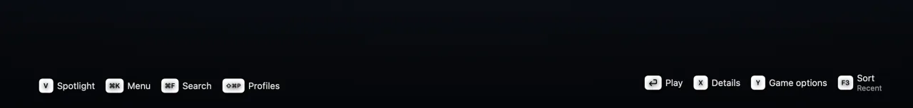
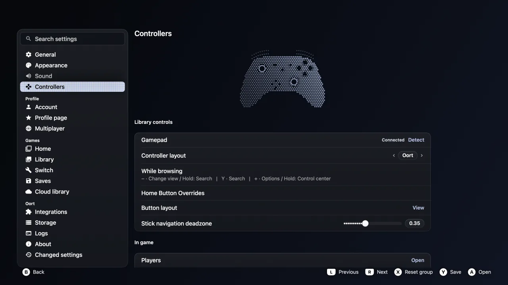

Controller and keyboard
This guide describes 0.5.0-beta.3. 0.5.0-beta.4 is out since. What changes
- 1
The useful buttons
Reminders are at the bottom of the screen.
Action Xbox Switch PlayStation Keyboard Play, select A A Cross Return Back B B Circle Escape Details X X Square X Search Y Y Triangle ⌘F Game options Menu + Options Y Grid or spotlight View − Touchpad V Previous, next tab LB / RB L / R L1 / R1 Q / E Sort Right stick Right stick R3 F3 Control center Hold Menu Hold + Hold Options ⌘K Settings Hold Guide Hold Home Hold PS ⌘, Checked with invented games : Where this comes from

- 2
Two layouts
This table is the Oort layout. An earlier profile keeps Arcane, where settings are on held Menu: Settings › Controllers › Controller layout.
Read in the code, not tried : Where this comes from

- 3
The Home button
If macOS keeps it, Oort says so once. Home Button Overrides opens the macOS setting.
Read in the code, not tried : Where this comes from
- 4
Try your controller
In Settings › Controllers, it is drawn in dots and lights what you press. Not tried with a real controller in this version.
Checked with invented games : Where this comes from


What has been tried
Checked automatically with invented games. No real game started, no real Drive transfer and no real controller with this version.